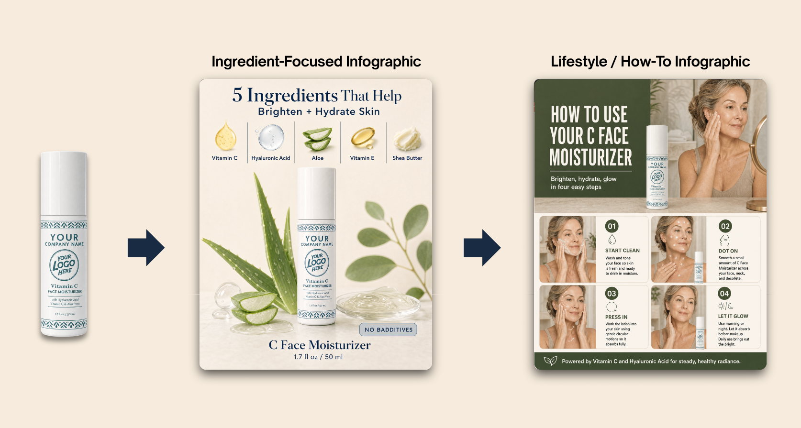
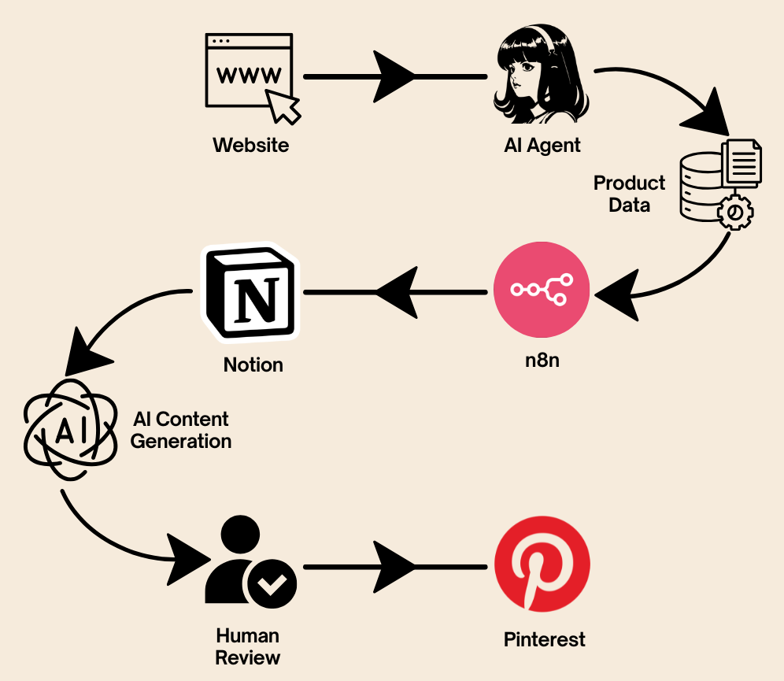
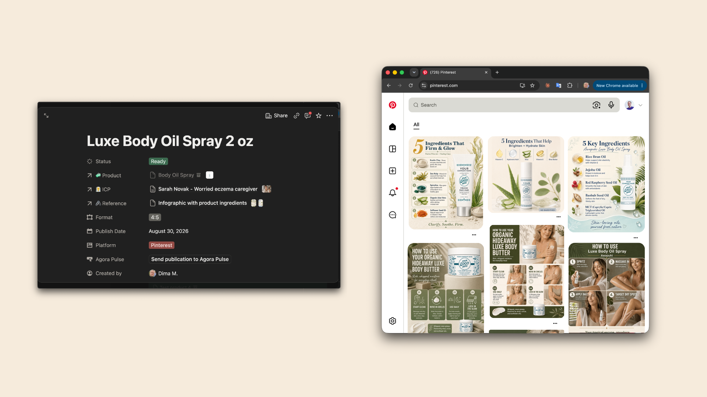

For me, planning the architecture is usually not the hardest part of an AI automation project.
I can normally understand how the process works, where the bottlenecks are and how the system should be built.
The harder part is team adoption.
You can design a strong AI content system, connect the right tools and automate the content workflow. But if the marketing team does not use it naturally in their daily work, the technical part alone is not enough.
This project started with an established US beauty and wellness brand.
The marketing team had a large product catalog and needed many types of content around it: product images, posters, infographics, videos and assets for social media, retail and online campaigns.
They already had the products, brand guidelines and people creating content. The problem was the amount of repetitive work needed to keep producing more.
The goal was to build an AI content system that could scale content production without scaling headcount.
Before building
I first tried to understand how the team was already working. Where does the product information come from? Where are the brand rules stored? Who asks for content? Where should the final image or video go?
Then I look at the smaller things. Why is someone copying this information again? Does this step need a person? Can we automate it or remove it completely?
Sometimes the problem is simple: two tools are disconnected, the same data is entered twice or an old process is still there because nobody changed it.
Only after that do I start choosing the tools.
From product catalog to content
For a brand with many products, content becomes a scale problem quickly. One product may need a social image, an infographic, a short video and another format for the next campaign.
Doing all of this manually means repeating the same work again and again.
My idea was to use the website and product catalog as the base, keep the brand context in one place and let the same AI workflow create product images, infographics and video when the team needs them.
One product. One source of brand context. Many content formats.
A request could be as simple as: “Create a poster for this product.”
The system finds the product information, applies the right brand rules, generates the asset, saves it and sends the result back.

Over time, we connected Notion, Monday.com, Google Drive, n8n, image and video models and publishing tools into the same system. Most of this complexity stays behind the scenes.
How I structured the system
I usually see four main parts in systems like this.
The team’s workspace: Slack, Monday.com or another tool people already use.
The AI assistant: Understands the request and decides what happens next.
The knowledge: Product data, brand guidelines, references and instructions. Most of this lived in Notion.
The automation: n8n, APIs and AI models handle the actions.

This structure also helps with another important problem: keeping the brand voice when using AI.
AI without enough context quickly becomes generic. If it knows the products, approved references and brand rules, the result becomes much more consistent.
Then I found another problem
Technically, the system worked.
It could generate content, save it and move it between different tools.
But the team was not using it as much as I expected.
That changed how I think about AI implementation.
Building an AI system is one problem. Building an AI content system that the team will actually use is another.

If people need to learn another complicated process or remember another place to work, they can simply return to the old way.
Now, when I design automation, I also think about where the AI should appear, how many steps the person needs to make and where the result should come back.
Sometimes a small workflow change is more valuable than adding another AI tool.
What should stay human?
I also don’t think 100% automation should be the goal.
AI video is a good example. I can automate most of the production, but I still want a person to review the result, remove weak parts and decide what is good enough to publish.
For me, the better question is not AI vs hiring a content manager. It is which repetitive work AI can remove so the team has more time for judgment, taste and context.
Sometimes the answer is automation. Sometimes the best answer is to remove the step completely.
What I would change today?
If I started a similar project now, I would begin with one useful workflow and watch how the team actually uses it. What saves time? Where do people get confused? What looked useful while we were building it but does not matter in daily work?
Then I would expand from there. We can build complex AI systems much faster today.
The harder part is keeping that complexity behind the scenes and giving the team something simple.
If you are a founder or marketing lead looking at how to automate content production for a beauty, skincare or wellness brand, this is where I would start:
Start with the repetitive work. Use the product and brand information you already have. Then build AI around the way your team actually works, so people have more time for the creative work that still needs them.
I’m Dima — AI System Architect. I help teams remove repetitive work with AI and turn complex processes into one working system. You can see more of my work at mikheiev.com